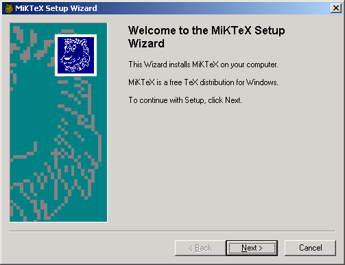
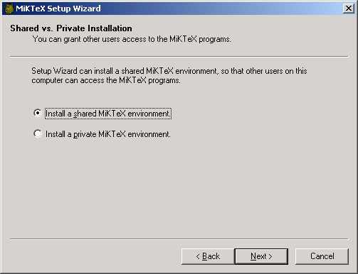
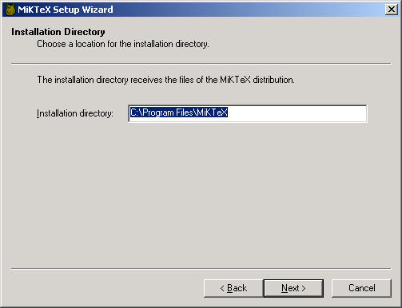
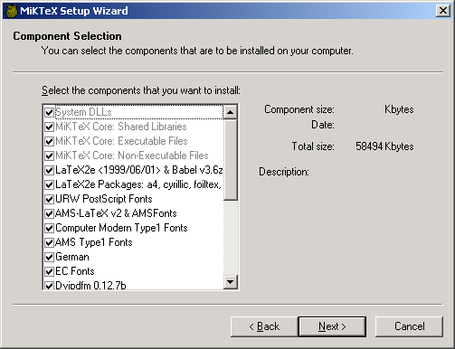
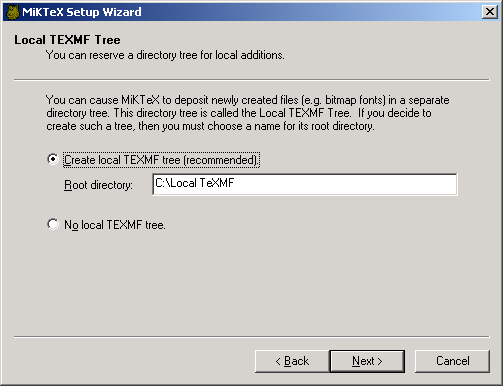
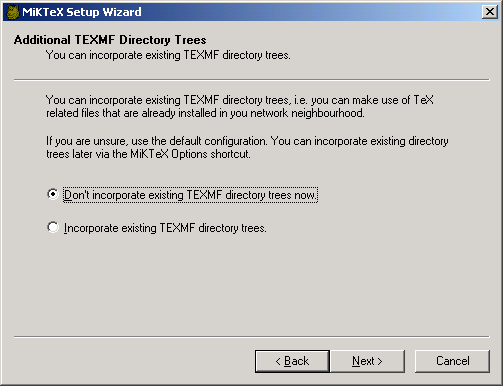
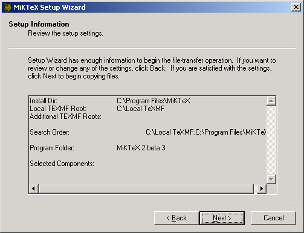
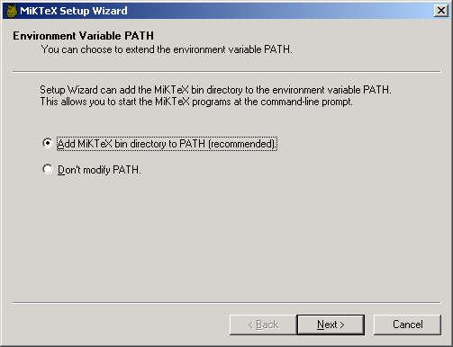
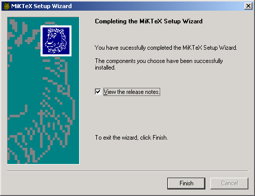

MiKTeX Installation Instructions
This file contains installation instructions for MiKTeX 2.0.
1. Installation Instructions
-
You should first remove any previous MiKTeX installation:
-
MiKTeX 1.11 users can use the uninstall program.
-
MiKTeX 1.20 users must remove MiKTeX by hand. See the Local
Guide of version 1.20, for more information.
-
MiKTeX 2.0 users can use the uninstall program.
-
Make sure that you have enough disk space. A complete MiKTeX
installation consumes approximately 70MB of disk space.
-
It is highly recommended that you login as Administrator, if you're
installing MiKTeX on a Windows NT/2000 computer.
-
Choose a location for the installation folder (e.g.
C:\Program
Files\MiKTeX). This folder receives the files of the MiKTeX
distribution.
-
You can cause MiKTeX to deposit newly created files (fonts, format
files, file name databases) in a separate hierarchy of folders, called
the Local TEXMF tree. If you decide to use a local TEXMF tree,
then you must choose a location for its root folder (e.g.
C:\Local
TeXMF).
Benefits that a local TEXMF tree provides include the following:
-
You can use it for your own additions (macros, fonts).
-
Easier updates: You don't have to worry about future MiKTeX updates,
since the local TEXMF tree wont be touched by the setup program.
-
Decide whether you want to incorporate an existing TEXMF tree. For
example, if you have a TeXLive CD inserted in your CD-ROM drive
E:, then it would be possible to include E:\texmf (the
root of the TeXLive TEXMF tree) in the MiKTeX search procedure.
-
Start MiKTeX Setup Wizard (
setupwiz.exe). You will
presented with the welcome page:

-
Click `Next>' to go to the next page:

You have the option to create a shared installation, so that other users
are able to use MiKTeX. Under Windows NT/2000, this option requires
administrator privileges.
-
Click `Next>' to go to the next page:

Enter the full path to the desired installation folder (see step 4).
-
Click `Next>' to go to the next page:

Choose the components that you want to install.
-
Click `Next>' to go to the next page:

Enter the full path to the desired local TEXMF folder (see step 5).
Check the button `No local TEXMF tree', if you don't want
to use a local TEXMF tree.
-
Click `Next>' to go to the next page:

You are asked about whether you want to incorporate existing TEXMF trees.
If you check the button `Incorporate existing TEXMF directory trees',
then you must specify the locations of those trees on a subsequent page.
-
Click `Next>' to go to the next page:

You should now review the installation options.
-
Click `Next>' to start the installation process. The selected
components will be copied to the installation folder chosen in step 9.
-
When the files have been copied to your computer, you have the option
to register the path to the MiKTeX bin directory:

-
Click `Next>' to go to the final page:

Click `Finish' to close Setup Wizard.
2. Setup Options
For the purpose of an unattended setup, some settings can be specified
on the command-line and/or in a separate text file named
setupwiz.opt.
You can invoke the MiKTeX Setup Wizard with the following
command-line options:
--additional-directory-trees DIRS
- Specify additional TEXMF directories.
--allow-unattended-reboot
- Allow a reboot in unattended mode.
--dry-run
- Simulate the installation process. No files will be installed. The log
file will be written to the temporary directory.
--installation-directory DIR
- Specify the installation directory.
--help
- Show available options and exit.
--no-additional-directory-trees
- Prevent MiKTeX from using additional directory trees.
--no-local-directory
- Prevent MiKTeX from using a local directory.
--program-folder FOLDER
- Specify the MiKTeX program folder.
--unattended
- Run Setup Wizard in unattended mode. No user input is required.
Command-line options can also be specified in a text file named
setupwiz.opt. This file must be in the same directory as
setupwiz.exe.
Table of Contents
1. Installation Instructions
2. Setup Options
Short Table of Contents
1. Installation Instructions
2. Setup Options
About this document
This document was generated
using texi2html
The buttons in the navigation panels have the following meaning:
| Button |
Name |
Go to |
From 1.2.3 go to |
|
[ < ] |
Back
|
previous section in reading order
|
1.2.2
|
|
[ > ] |
Forward
|
next section in reading order
|
1.2.4
|
|
[ << ] |
FastBack
|
previous or up-and-previous section
|
1.1
|
|
[ Up ] |
Up
|
up section
|
1.2
|
|
[ >> ] |
FastForward
|
next or up-and-next section
|
1.3
|
|
[Top] |
Top
|
cover (top) of document
|
|
|
[Contents] |
Contents
|
table of contents
|
|
|
[Index] |
Index
|
concept index
|
|
|
[ ? ] |
About
|
this page
|
|
where the Example assumes that the current position
is at Subsubsection One-Two-Three of a document of
the following structure:
- 1. Section One
- 1.1 Subsection One-One
- 1.2 Subsection One-Two
- 1.2.1 Subsubsection One-Two-One
- 1.2.2 Subsubsection One-Two-Two
- 1.2.3 Subsubsection One-Two-Three
<== Current Position
- 1.2.4 Subsubsection One-Two-Four
- 1.3 Subsection One-Three
- 1.4 Subsection One-Four
This document was generated
on January, 21 2001
using texi2html